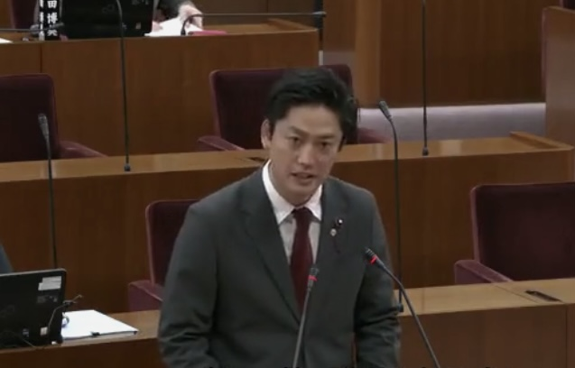

ブログ・活動報告
議会活動・地域の出来事・政策解説を発信しています
RECENT POSTS
注目の最新記事
{% for post in site.posts %}
 {% endif %}
{% endfor %}
{% endif %}
{% endfor %}
{{ post.date | date: "%Y.%m.%d" }}
{% if post.category %}
{% if post.thumbnail %}
{{ post.category }}
{% endif %}
{{ post.title }}
{% if post.description %}{{ post.description }}
{% endif %}2026.03.29
議会質問レポート
令和8年3月定例会 一般質問レポート ― 緑の資産を守る・教職員環境の充実
緑地・街路樹の管理方針と学校教員の人手不足について議論。新磯の桜並木のシンボル並木指定や教職員を守るガイドライン整備を求めました。

旧サイト
市政レポート
令和8年度相模原市予算案が予算委員会で採択されました。
令和8年度当初予算案が予算委員会にて採択されました。審議の経過と結果についてご報告します。
旧サイト
議会質疑
R8/3/17一般質疑録（暫定） 教職員不足への対応について
令和8年3月17日の一般質疑における、教職員不足への対応に関する質疑録です。